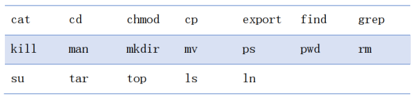

PA1: Environments
Q1. Markdown语法掌握
所有任务都要求产出Markdown报告，导出PDF提交
Q2. 熟悉Linux指令
熟悉以下指令

| 命令 | 含义 | 选项 | 选项含义 |
|---|---|---|---|
| ls | xxx | -a | xxx |
要求：
- 以表格的形式整理
- 各指令选择1-2个常用选项
Q3. 编程环境配置
- 完成Vim章节展示的相关配置，并使用Vim指令完成vim.txt相关操作
- 完成VSCode/CLion远程连接环境配置
Q4. CMake构建工程
选择自己招新考核题中的任意一道题，使用CMake重新构建
要求：
- 大二的同学必须选择4 5 6其中一个
Q5. 熟悉C++ STL
完成stl库中常用数据结构练习（vector，queue，unordered_map，map），完成demo代码。
要求：
- 代码：注释 == 1：1
- Linux下使用cmake构建
APPENDIX A. 复现vector
本题（考虑到任务量）为附加题，为了让大家熟悉C++11、模板编程以及代码规范
要求：
- 复现简易的vector容器
- 无需自己实现空间配置器、构造器和迭代器（也就是可以直接用STL的，当然要是你足够巨佬也可以选择自己实现）
- 需要实现的API间文末，主要是构造函数和容器修改部分（注：helper是我自己复现的时候抽象出来的，如果不清楚是什么意思，你可以直接删掉）
- 推荐阅读《STL源码剖析》
template <class T>
class vector{
// 无需支持vector<bool>
static_assert(!std::is_same<T, bool>::value, "vector<bool> is not needed.");
// vector嵌套型别定义
public:
typedef std::allocator<T> allocator_type;
typedef std::allocator<T> data_allocator;
// typename 指明为类型而不是成员
typedef typename allocator_type::value_type value_type;
typedef typename allocator_type::pointer pointer;
typedef typename allocator_type::const_pointer const_pointer;
typedef typename allocator_type::reference reference;
typedef typename allocator_type::const_reference const_reference;
typedef typename allocator_type::size_type size_type;
typedef typename allocator_type::difference_type difference_type;
typedef value_type* iterator;
typedef const value_type* const_iterator;
// 构造、析构、移动函数
public:
vector() noexcept;
vector(size_type n);
vector(size_type n, const value_type& value);
template <class Iter, typename std::enable_if
<mystl::is_iterator<Iter>::value, int>::type = 0>
vector(Iter first, Iter last);
vector(const vector& rhs);
vector(vector&& rhs) noexcept;
vector(std::initializer_list<value_type> il);
~vector()
{ _begin = _end = _cap = nullptr; }
vector& operator=(const vector& rhs);
vector& operator=(vector&& rhs) noexcept;
vector& operator=(std::initializer_list<value_type> ilist);
// 迭代器相关
public:
iterator _begin; // 目前使用空间的起始位置
iterator _end; // 目前使用空间的结束位置
iterator _cap; // 当前空间的结束位置
public:
iterator begin() noexcept
{ return _begin; }
const_iterator begin() const noexcept
{ return _begin; }
const_iterator cbegin() noexcept
{ return _begin; }
iterator end() noexcept
{ return _end; }
const_iterator end() const noexcept
{ return _end; }
const_iterator cend() noexcept
{ return _end; }
size_type size() const noexcept
{ return static_cast<size_type>(_end - _begin); }
size_type capacity() const noexcept
{ return static_cast<size_type>(_cap - _begin); }
size_type max_size() const noexcept
{ return static_cast<size_type>(-1) - sizeof(T); }
bool empty() const noexcept
{ return begin() == end(); }
// 访问元素
public:
reference operator[] (size_type n)
{ return *(_begin + n); }
const_reference operator[] (size_type n) const
{ return *(_begin + n); }
reference at (size_type n)
{ return (*this)[n]; }
const_reference at (size_type n) const
{ return (*this)[n]; }
iterator front()
{ return *_begin; }
const_iterator front() const
{ return *_begin; }
iterator back()
{ return *(_end - 1); }
const_iterator back() const
{ return *(_end - 1); }
pointer data() noexcept
{ return _begin; }
const_pointer data() const noexcept
{ return _begin; }
// 修改容器
public:
template <typename ...Args>
iterator emplace(const_iterator pos, Args&& ...args);
template <typename ...Args>
void emplace_back(Args&& ...args);
void push_back(const value_type& value);
void push_back(value_type&& value);
void pop_back();
void assign(size_type n, const value_type& value);
void assign(std::initializer_list<value_type> il);
template <typename Iter, typename std::enable_if
<mystl::is_input_iterator<Iter>::value, int>::type* = 0>
void assign(Iter first, Iter last);
iterator insert(const_iterator pos, const value_type& value);
iterator insert(const_iterator pos, value_type&& value);
iterator insert(const_iterator pos, size_type n, const value_type& value);
template <typename Iter, typename std::enable_if
<mystl::is_input_iterator<Iter>::value, int>::type = 0>
iterator insert(const_iterator pos, Iter first, Iter last);
iterator erase(const_iterator pos);
iterator erase(const_iterator first, const_iterator last);
void clear() { erase(begin(), end()); }
void resize(size_type n);
void resize(size_type n, const value_type& value);
void swap(vector& rhs) noexcept;
// helper函数
private:
// 各种配置空间的方式：单个元素、连续空间、迭代器...
void try_init() noexcept;
void fill_init(size_type n, const value_type& value);
template <typename Iter>
void range_init(Iter first, Iter last);
void init_space(size_type size, size_type cap);
// 析构并释放空间
void destroy_and_recover(iterator first, iterator last, size_type n);
// 扩容函数
size_type get_new_cap(size_type add_size);
// assign辅助函数
void fill_assign(size_type n, const value_type& value);
template <typename InputIter>
void copy_assign(InputIter first, InputIter last, input_iterator_tag);
template <typename ForwardIter>
void copy_assign(ForwardIter first, ForwardIter last, forward_iterator_tag);
// 重新分配空间
template <typename ...Args>
void reallocate_emplace(iterator pos, Args&& ...args);
void reallocate_insert(iterator pos, const value_type& value);
void fill_insert(iterator pos, size_type n, const value_type& value);
template <typename Iter>
void copy_insert(iterator pos, Iter first, Iter last);
void reinsert(size_type n);
};